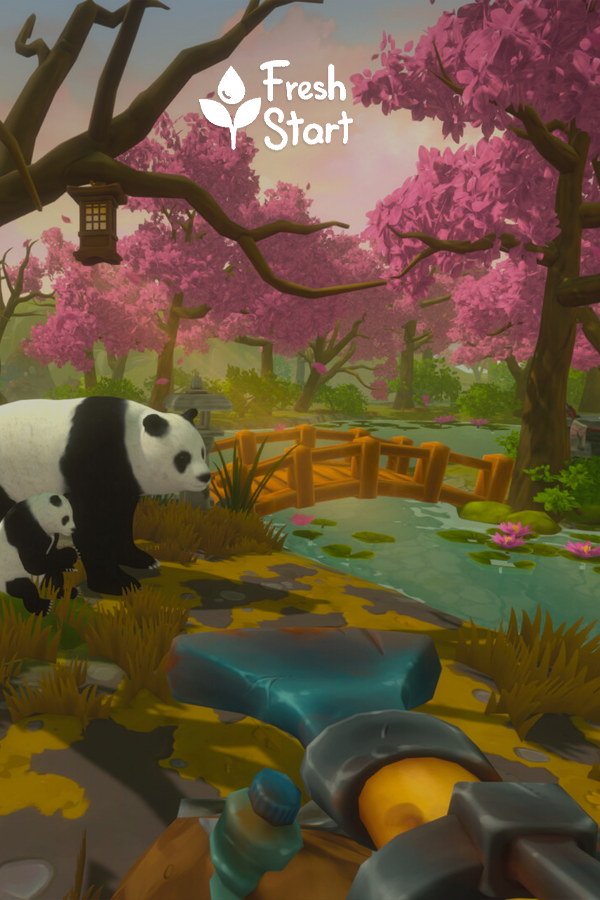

Fresh Start Cleaning Simulator
Fresh Start Cleaning Simulator
Details
|  | |
| Playtime | Not Played |
| Last Activity | Never |
| Added | 5/06/2025 3:05:38 |
| Modified | 7/06/2025 19:44:06 |
| Completion Status | Not Played |
| Library | Steam |
| Source | Steam |
| Platform | PC (Windows) |
| Release Date | |
| Community Score | |
| Critic Score | |
| User Score | |
| Genre | Action Adventure Casual Indie Simulation |
| Developer | |
| Publisher | |
| Feature | Achievements Family Sharing Full Controller Support Single-Player |
| Links | Community Hub Discussions Guides News Store Page PCGamingWiki Achievements |
| Tag | 3D Action Adventure Atmospheric Building Casual Early Access Education Family Friendly First-Person FPS Funny Immersive Sim Indie Realistic Relaxing Sandbox Simulation Singleplayer Story Rich |
Description

Welcome to the world that needs your help!
Fresh Start is a relaxing single player game, in which you embark on a mission to clean up the world and restore nature to its fresh and colorful shape. Watch as the world changes in front of your eyes as you help animals, solve puzzles and grow plants around you.
Travel all over the world and give it a Fresh Start it deserves!

SAVE THE WORLD AROUND YOU!

A wonderful machine has been put into your hands - a combination of a vacuum cleaner and a watering hose! While traveling the world, you’ll be able to wash away piles of mud and dirt from the surface of the earth. All vacuumed up and collected rubbish can then be recycled into valuable experience points.
GROW YOUR SKILLS!

As you gather experience from restoring the world, you can choose to spend them on a variety of upgrades from the skill shop. Your hard earned experience points can be put to use to make your work more efficient.
WATER THE DRIED-UP PLANTS AND BRING BACK THEIR BEAUTY

Use the power of water to bring dry and dead plants back to life. Spray the ones that are just sprouting to help them bloom in full force! Remember - it’s not just plants that need water to get back to life!
HELP OTHER AND MAKE FRIENDS!


As you travel around the world you’re going to meet some cute, unique friends in need! Use your skills to bring comfort and happiness back into their lives and you will quickly gain their gratitude and friendship.
SEARCH FOR MYSTERIOUS ITEMS AND SOLVE PUZZLES

It’s not as simple as you think - apart from cleaning the world, there are quests waiting for you in each place your journey takes you to. Find puzzle elements and mechanism pieces hidden throughout the maps to fix your travel vehicles. Gather food dispensers to feed hungry animals. Uncover shrines, campsites and more as you travel and help nature all around the globe!